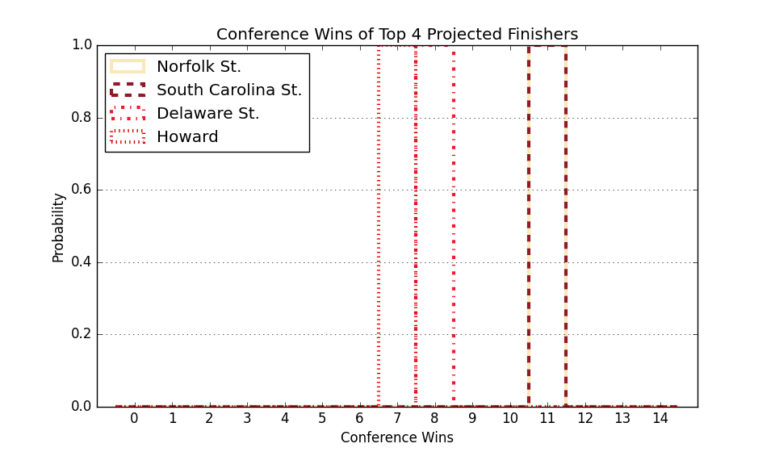

This Week's Games
| Date | Away | W Prob, Pred Score | Home | |||
|---|---|---|---|---|---|---|
| Nov. 29 | Norfolk St. | 1.1% | 58 | 89 | 98.9% | Arizona |
| Nov. 29 | Delaware St. | 12.4% | 67 | 80 | 87.6% | UMBC |
| Nov. 29 | Howard | 48.2% | 72 | 73 | 51.8% | Mount St. Mary's |
| Nov. 29 | South Carolina St. | 3.3% | 64 | 89 | 96.7% | Winthrop |
| Nov. 30 | Coppin St. | 9.6% | 62 | 78 | 90.4% | Loyola MD |
| Dec. 01 | South Carolina St. | 25.5% | 69 | 77 | 74.5% | Chicago St. |
| Dec. 02 | Md Eastern Shore | 13.2% | 59 | 72 | 86.8% | East Carolina |
| Dec. 03 | Coppin St. | 0.9% | 48 | 81 | 99.1% | West Virginia |
| Dec. 03 | Navy | 85.8% | 77 | 64 | 14.2% | Delaware St. |
| Dec. 03 | North Carolina Central | 5.7% | 66 | 85 | 94.3% | James Madison |
| Dec. 05 | South Carolina St. | 9.3% | 64 | 80 | 90.7% | Bethune Cookman |